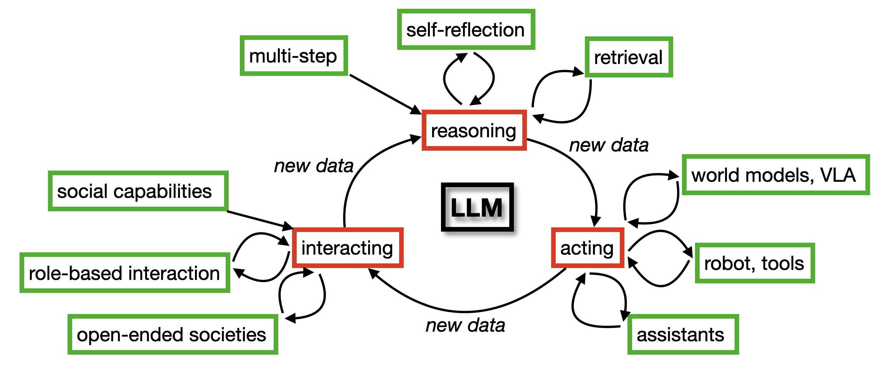
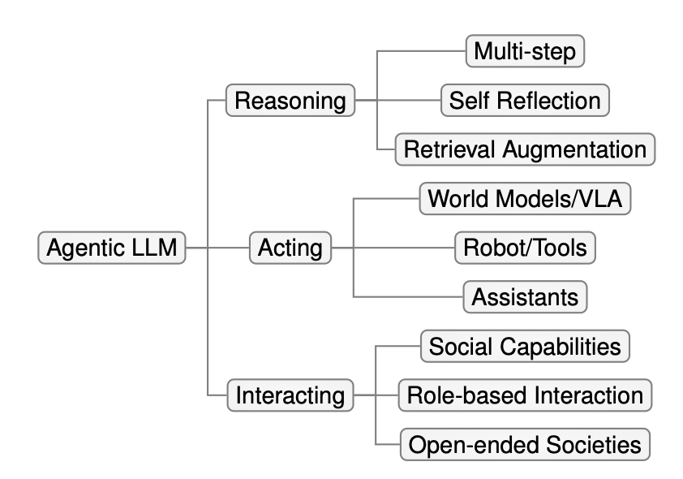

About the Paper
This survey, authored by Aske Plaat, Max van Duijn, Niki van Stein, Mike Preuss, Peter van der Putten, and Kees Joost Batenburg at Leiden University, explores the emerging landscape of agentic large language models (LLMs) that reason, act, and interact. It provides a structured taxonomy and an extensive review of state-of-the-art research in the field.
Key Contributions
- A taxonomy of agentic LLMs in terms of reasoning, acting, and interacting.
- Discussion of applications in medicine, finance, logistics, and science.
- Outlook on future research directions and societal implications.
Abstract
There is great interest in agentic LLMs, large language models that act as agents. We review the growing body of work in this area and provide a research agenda. Agentic LLMs are LLMs that (1) reason, (2) act, and (3) interact. We organize the literature according to these three categories. The research in the first category focuses on reasoning, re- flection, and retrieval, aiming to improve decision making; the second category focuses on action models, robots, and tools, aiming for agents that act as useful assistants; the third category focuses on multi-agent systems, aiming for collaborative task solving and simulating interaction to study emergent social behavior. We find that works mutually benefit from results in other categories: retrieval enables tool use, reflection improves multi-agent collaboration, and reasoning benefits all categories. We discuss applications of agentic LLMs and provide an agenda for further research. Important applications are in medical diagnosis, logistics and financial market analysis. Meanwhile, self- reflective agents playing roles and interacting with one another augment the process of scientific research itself. Further, agentic LLMs may provide a solution for the problem of LLMs running out of training data: inference-time behavior generates new training states, such that LLMs can keep learning without needing ever larger datasets. We note that there is risk associated with LLM assistants taking action in the real world, while agentic LLMs are also likely to benefit society.Illustrative Figures
Figure: The virtuous cycle connecting reasoning, acting, and interacting.
Figure: Taxonomy overview of agentic capabilities.
Research Agenda
Our survey has yielded interesting directions for a research agenda for agentic LLMs, which we will now discuss in more detail. Please refer to Table 4 for a summary of the agenda.Training Data
The benefit from language corpuses that are used for pretraining of LLMs is said to be plateauing. To improve the performance of LLMs on language (and reasoning) tasks further, it is important to continue to acquire training data that is sufficiently novel and challenging from a token-prediction point of view. Such data can be generated by making LLMs interact with the world at inference time. Currently, in most approaches that were discussed in Section 2, inference-time compute is only used to improve performance on reasoning benchmarks. In most early Chain of Thought approaches the generated data is not used after the answer has been calculated. In other approaches—such as Say Can, Inner Monologue, and Vision-Language-Action models—data that is generated at infer- ence time is used for augmentation of the finetuning dataset, creating an inference time-finetuning feedback loop, so that the model’s parameters are trained from its own earlier reasoning. Such feedback loops are common in reinforcement learning, where agents act and receive feed- back from their environment. In games, a self-learning loop can be created [Plaat, 2022]. In Al- phaGo Zero this approach yielded good results, although at the cost of careful tuning of hyper- parameters and algorithms, to ensure sustained convergence of the learning process [Silver et al., 2017]. Similar results were achieved in other challenging games, such as StarCraft [Vinyals et al., 2019], Stratego [Perolat et al., 2022], DOTA 2 [Berner et al., 2019], Diplomacy [Bakhtin et al., 2022], and Poker [Brown and Sandholm, 2019]. More formally, in the traditional self-supervised view a model M is trained to predict label y from input variable x in dataset D; in reinforcement learning an agent’s policy π is trained with reward r to perform action a to change state s of its environment E. In agentic LLMs, both views are joined. Agentic LLMs use a language model M as the policy π to determine the agent’s next action (see Figure 32). Actions can be used to retrieve information, to split a larger problem into smaller parts, to run a tool, to use memory to reflect on its own actions, to suggest stock trades, to book travel tickets, or to interact with other agents working towards a common goal. The approach that worked well in games of strategy is now also successfully used in robotics, in the creation of Vision-Language-Action models [Black et al., 2024, Brohan et al., 2023]. VLAs that are trained on self-generated action sequences show zero-shot generalization results in domestic tasks (kitchen tasks, folding laundry) that had not been achieved by other machine learning methods. Recently, reasoning models—such as DeepSeek [Guo et al., 2025] and Kimi [Du et al., 2025]—are also being trained with reinforcement learning. Other uses of agents for finetuning are reported by Subramaniam et al. [2025]. Reuse of inference time results for finetuning and pretraining closes the learning loop (see Fig- ure 1), and is the first item for the agenda for further research. It is interesting to see how the reinforcement learning methods that worked well for games of strategy are being translated to work in LLMs that act in the real world. VLAs integrate multiple modalities: language, visual information, and actions. Further modali- ties are speech, other audio signals, and videos. Electrical signals, such as brain or muscle activation, can also provide valuable inputs for the models to learn from.Hallucination and Stable Behavior
A challenge for the virtuous autocurriculum cycle is that LLMs hallucinate, and in multi-step reasoning errors can easily accumulate. LLM answers may look good, but be factually wrong. Reasoning chains may be unfaithful, giving good answers for the wrong reason, and wrong answers when least expected. Especially when such dubious results are used to further train the LLM, this training may diverge and model collapse may occur. In social simulations, emerging behavior patterns, such as cooperation, fairness, trust or norms, may collapse. Therefore, in multi-step reasoning, self verification and self consistency methods were developed to address error accumulation. In reinforcement learning, exploration and diversity are important methods to ensure good coverage of the state space. In social simulations and gaming, open world models and open-ended behavior are being used to stimulate exploration and diversity. Such models can provide suitable environments for automated generation of training curricula. Faithfulness for Chain of Thought is studied by Lyu et al. [2023], Lanham et al. [2023], Turpin et al. [2024]. Mechanistic interpretability can provide ways to look inside the LLM, to better under- stand if the model follows the reasoning steps that we expect it to take [Nanda et al., 2023, Bereska and Gavves, 2024, Ferrando et al., 2024]. The conditions that influence stability of emergent behav- ior (cooperation, fairness, trust) may be studied further. For agentic LLMs that learn from their own results, other methods must be developed, and hallucination features prominently on the research agenda for agentic LLMs, with mechanistic in- terpretability and open world models as important items.Agent Behavior at Scale
Studies of emergent behavior need realistic agent behavior, and we expect more research to be performed to improve agent behavior, for example by closely modeling human behavior in generative agents [Park et al., 2024]. Some behavior patterns in multi-agent simulations only emerge at scale, as studies with specialized agent infrastructures have shown [Park et al., 2023, Yang et al., 2024e, Wu et al., 2023]. However, the number of LLM agents that can be simulated reliably is often limited. Although open-ended simulation show improved scalability, we believe that more research into scaling of simulations with complex agents is necessary. Related to the challenge of scale is the cost of training LLMs. Pretraining and finetuning an LLM is expensive. Knowledge distillation is a popular method to extract essential knowledge and behavior from a large model into a small model, at lower computational cost [Xu et al., 2024b]. Experiments have shown that reasoning steps can be distilled from large to smaller language models [Gu et al., 2023, Li et al., 2023b, Muennighoff et al., 2025]. Knowledge distillation in LLM agents in an important item for our research agenda. Another aspect of agentic LLM research is the study of emergent behavior, of cooperation and trust in agentic societies. The debate on artificial super-intelligence is fueled, in part, by the growing performance of individual LLMs, which is an important aspect of agentic LLM research. Studies of emergent agent behavior at scale may show us when cooperation and trust emerge, may influence our view on the nature of intelligence, and may thus influence the discussion on artificial super- intelligence and the future of society. Furthermore, the world around us is organized in groups in which power hierarchies are prevalent. Many multi agent simulations assume a flat power hierarchy. Multi agent simulations should also go beyond equality.Self Reflection
Self reflection mechanisms are used in advanced prompt-improvement algorithms. Hand-writing external prompt management algorithms may be error prone and brittle. An alterna- tive is to let the LLM perform the self reflection and step-by-step management internally, as in the original Chain of Thought. DeepSeek R1 [Guo et al., 2025] is a reasoning model that is trained (finetuned) by the GRPO reinforcement learning method [Shao et al., 2024]. The model is trained on its own reasoning results, and was found to self-reflectively reason over its own results, identifying effective reasoning patterns implicitly. Schultz et al. [2024] train a model on search sequences [Gandhi et al., 2024] in games such as chess, and VLAs are trained on action sequences [Kim et al., 2024]. These works shows that, in addition to implicit step-by-step reasoning, implicit search is possible. An open question is whether LLMs can perform self reflection internally. By adding external state to an LLM, we enable reasoning and a form of self reflection, which is a rudimentary form of metacognition (thinking about thinking). LLMs that reflect on their own be- havior raise visions of true artificial intelligence. If LLMs can self-reflect, can they exhibit metacognition [Wang and Zhao, 2023, Didolkar et al., 2024]? Self reflection by LLMs is another item for the research agenda. When we add outside state to the input prompts, the input to the LLM will differ based on the history, and so will the answers of the LLM. Differences in memory may be preceived as a person- ality of the LLMs by its users. The question if LLMs with outside memory exhibit a personality is a topic for future research. Self reflective methods are being used to create agents to perform scientific discovery [Eger et al., 2025]. How these agents will influence, and possibly improve, the process of scientific dis- covery is an exciting area of research.Safety
Safety is an important issue in LLMs that act in the world. The problem is studied, but far from being solved [Brunke et al., 2022, Andriushchenko et al., 2024, Samvelyan et al., 2024]. Actions by assistants and robots in the real world have real world consequences. When a financial trading assistant hallucinates, or when a self driving robot makes a wrong inference, questions on responsibility and liability should be addressed. More legal and ethical questions arise, for example, on privacy and fairness, and, possibly, concerning the rights of algorithmic entities [Harris and Anthis, 2021]. The application areas for the assistants in this survey—shopping, medical diagnosis, finance— are narrow. The narrower the application domain, the better the answers. Clearly, many safety, ethics and trust issues will have to be addressed before the full breadth of the possibilities of agentic LLMs can be enjoyed. Safety will continue to be an important topic on the research agenda of agentic LLMs.Conclusion
There is a large research activity on agentic LLMs. Already, robots show impressive results, and so do assistants in medical diagnosis, financial market advising, and scientific research. Work processes in these—and other—fields may well be affected by agentic LLM assistants in the near future. The agentic LLMs in this survey have (1) reasoning capabilities, (2) an interface to the out- side world in order to act, and (3) a social environment with other agents with which to interact. The categories of this taxonomy complement each other. At the basis is the reasoning technology of category 1. Robotic interaction and tool-use build on grounded retrieval augmentation, social interaction (such as theory of mind) builds on self reflection, and all categories benefit from reason- ing and self-verification. Closing the cycle, the acting and interacting categories generate training data for further pretraining and finetuning LLMs, beyond plateauing traditional datasets (Figure 1). The impressive generalization capabilities of Vision-Language-Action models are testament to the power of this approach. The reasoning paradigm connects to works in human cognition, and some papers anthropomor- phize LLM computations in Kahneman’s terms of System 1 thinking (fast, associative) and System 2 thinking (slow, deliberative). Works on reasoning focus on the intelligence of single LLMs. This individualistic view also gives rise to discussions about superintelligence, some utopian, some not. The agentic paradigm enables two elements of machine learning that are new for LLMs. In reinforcement learning, agents self reflect and choose their own actions, and learn from the feedback of the world in which they operate. No dataset is needed, nor is learning limited by the complexity of a dataset, it is only limited by the complexity of the world around the agent. The agent paradigm creates a more challenging training setting, allowing agentic LLMs to keep improving themselves. The multi-agent paradigm studies agent-agent societies. The focus is on emergent behaviors such as egoism/altruism, competition/collaboration, and (dis)trust. Social cognitive development and the emergence of collective intelligence are also studied in this field. Connecting back to the reasoning paradigm, the collaboratieve view of multi-agent studies may inform discussions about (super)intelligence, teaching us about emerging social behavior of LLM-agents.Read the Full Paper
Stay in Touch
Follow the authors' work via Leiden University or connect with the XAI research group.